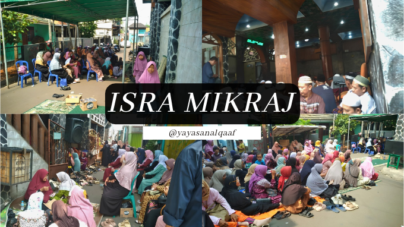
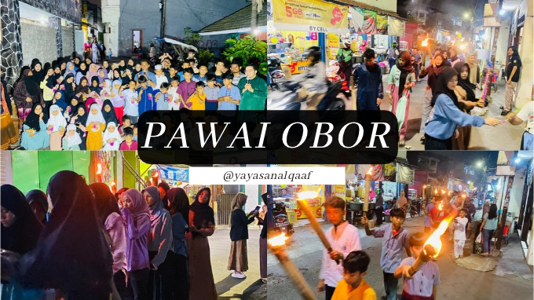

Isra Mikraj 2026
Antusiasme warga dan keluarga besar yayasan Al-Qaaf dalam mengikuti acara Isra Mikraj tahun ini. Acara berlangsung dari pagi hingga siang hari.
Dokumentasi kegiatan keluarga besar Yayasan Al-Qaaf.

Antusiasme warga dan keluarga besar yayasan Al-Qaaf dalam mengikuti acara Isra Mikraj tahun ini. Acara berlangsung dari pagi hingga siang hari.

Antusias warga sekitar dalam kegiatan pawai obor, dalam rangka menyambut tahun baru islam 1447 Hijriah.